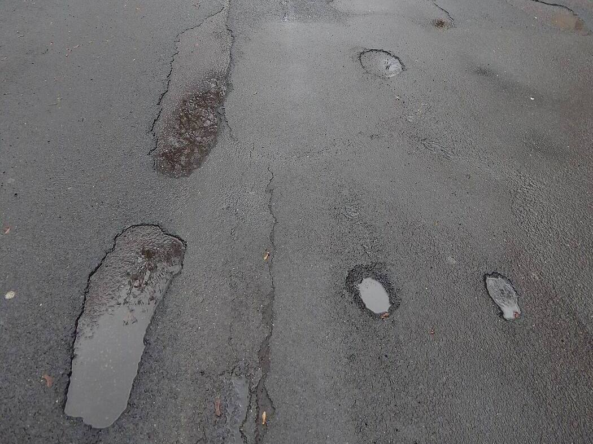
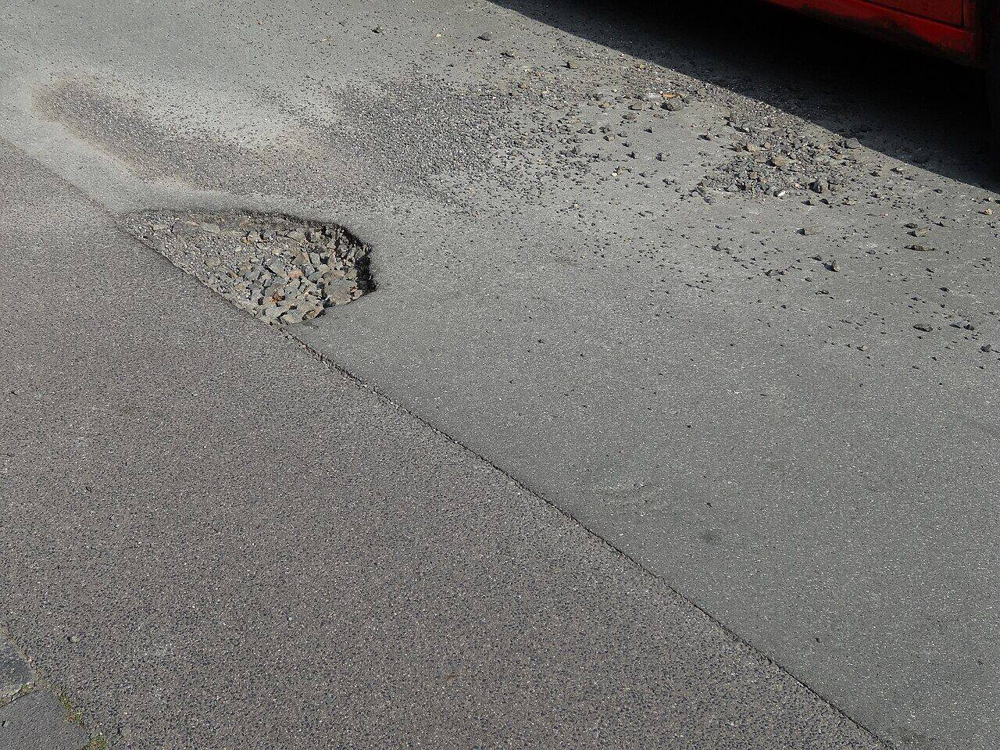

Image credits
All photos come from Wikimedia Commons. The detection boxes on them are illustrations, not real model output. Map data © OpenStreetMap contributors, ODbL. Damage on the map is sample data.
 Mercedes-Benz Econic Müllfahrzeug in Winterthur (2022) by JoachimKohler-HB, CC BY-SA 4.0. Cropped and resized.
Mercedes-Benz Econic Müllfahrzeug in Winterthur (2022) by JoachimKohler-HB, CC BY-SA 4.0. Cropped and resized. Fahrzeug der Stadtreinigung Dresden by ubahnverleih, CC BY 3.0. Cropped and resized.
Fahrzeug der Stadtreinigung Dresden by ubahnverleih, CC BY 3.0. Cropped and resized. It starts with a crack... by XoMEoX, CC BY 2.0. Cropped and resized.
It starts with a crack... by XoMEoX, CC BY 2.0. Cropped and resized. Deteriorated asphalt by Bidgee, CC BY-SA 3.0. Cropped and resized.
Deteriorated asphalt by Bidgee, CC BY-SA 3.0. Cropped and resized. Schlagloch in Dresden Reichenbachstraße by Fuzre Fitrinete, CC BY 3.0. Cropped and resized.
Schlagloch in Dresden Reichenbachstraße by Fuzre Fitrinete, CC BY 3.0. Cropped and resized.
(20230218) Magdeburg 10 by Roy Zuo, CC BY-SA 4.0. Cropped and resized. Asphalt Cracks by Tony Webster, CC BY 2.0. Cropped and resized.
Asphalt Cracks by Tony Webster, CC BY 2.0. Cropped and resized. Cracks by Stiller Beobachter, CC BY 2.0. Cropped and resized.
Cracks by Stiller Beobachter, CC BY 2.0. Cropped and resized. Schlagloch Lingnerallee, Dresden by Kalispera Dell, CC BY 3.0. Cropped and resized.
Schlagloch Lingnerallee, Dresden by Kalispera Dell, CC BY 3.0. Cropped and resized.
Leonhard-Frank-Straße, Dresden by Fuzre Fitrinete, CC BY 3.0. Cropped and resized. Schlagloch zwischen Friedrichsfeld und Grenzhof by 4028mdk09, CC BY-SA 3.0. Cropped and resized.
Schlagloch zwischen Friedrichsfeld und Grenzhof by 4028mdk09, CC BY-SA 3.0. Cropped and resized. Impressionen Dresden 2011 by Slick, CC0. Cropped and resized.
Impressionen Dresden 2011 by Slick, CC0. Cropped and resized.
.jpg){kind=link}

.jpg){kind=link}


_Magdeburg_10.jpg){kind=link}
.jpg){kind=link}
.jpg){kind=link}
.jpg){kind=link}
.jpg){kind=link}